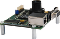

Supercomputing Systems AG
Die 1993 von Prof. Dr. Anton Gunzinger gegründete Supercomputing Systems AG (SCS) hat sich seit 1995 der Erbringung von Entwicklungsdienstleistungen im Auftrag von industriellen Kunden verschrieben
LeanXcam
LeanXcam ist die intelligente Kamera, die trotz geringer Kosten einen beeindruckenden Leistungsumfang bietet. Möglich macht dies die clevere Kombination aus bewährtem Sensorchip, schnellem Signalprozessor, angepasstem Linux-Betriebssystem und dem Bildverarbeitungsframework der SCS. Für die Kommunikation mit der Aussenwelt stehen neben der Ethernet-Verbindung auch digitale I/Os zur Verfügung. Die Entwicklungsumgebung sowie das Framework sind als Open Source Software völlig kostenlos erhältlich.